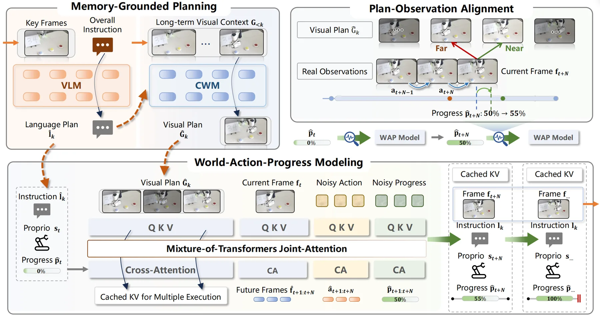
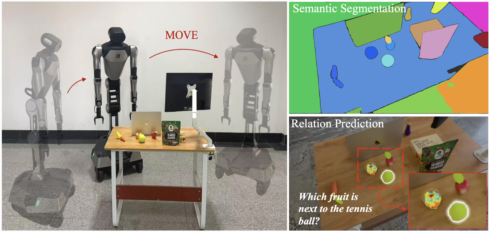
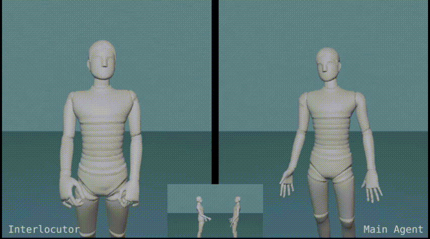

Embodied intelligence & robot learning

Weiyu Zhao赵维雨
Ph.D. student · Harbin Institute of Technology
Learning to act in
the physical world.
I study embodied intelligence, with a focus on learning robot manipulation from human videos, audio and text-driven motion synthesis, and mobile manipulation.
A little about me
I am a Ph.D. student in the School of Computer Science at Harbin Institute of Technology, advised by Prof. Shengping Zhang and Assoc. Prof. Shaohui Liu. I received my B.Eng. in Information Management and Information Systems from Hefei University of Technology.
01 / Background
The path so far.
Hefei University of Technology
School of Management
Bachelor of Engineering
Information Management and Information Systems
02 / Research
Selected publications.


From Gaussians to Graphs: Open-Vocabulary 3D Scene Graph Generation for Scene Understanding

QueryMe: Query-Driven Open-Vocabulary 3D Object Affordances Grounding from Multimodal Evidence


DialoGen: Towards Dialog Gesture Generation via Identity-Decoupled Style Guidance in Interactive Diffusion Model


The DiffuGesture entry to the GENEA Challenge 2023: Generating Human Gesture From Two-person Dialogue With Diffusion Models
03 / Get in touch
Let's connect.
For research conversations and opportunities to collaborate.